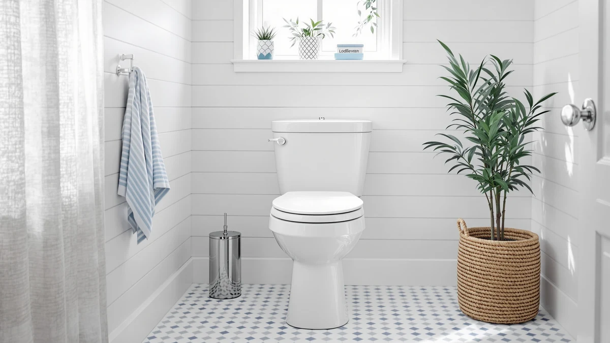

Kohler Hyten Elevated Toilet Seat Review (2026): Worth It?
Prices and picks verified as of November 2026. Independent, reader-supported reviews.


Quick Answer
Our Kohler Hyten Elevated Toilet Seat review finds a round toilet seat that adds 3 inches of height for easier sitting and standing, at $78.00. If your priority is mobility support on a round bowl, this is the pick. If you want a soft-close hinge at standard height or a heated surface instead, the alternatives below cover those needs.
Our pick: KOHLER 25876-96 Hyten 3" Height, $78.00 Check Price on Amazon
Bottom line: our top pick is the KOHLER 25876-96 Hyten 3" Height at $78.
Things to Know Before You Buy
- The Hyten is a round-bowl seat only, so measure your current seat before ordering if you have an elongated bowl.
- Kohler builds the 3-inch height boost into the seat itself, so there is no separate riser frame to install or remove.
- Kohler lists the construction as plastic and wood, keeping the seat lighter than a solid wood model.
- If warmth matters more than added height, a heated seat addresses a different problem than the Hyten solves.
This Kohler Hyten Elevated Toilet Seat review looks at whether a built-in 3-inch height boost is worth paying for on a round toilet seat, compared with a standard-height Kohler model and two heated competitors. Standing up from a low toilet gets harder with age, an injury, or a recent surgery, and a full raised-toilet frame is bulkier and pricier than most households want for that one problem. Kohler built the Hyten to solve it directly, molding the extra height into the seat shell rather than bolting on a separate riser.
Our pick for buyers who need that added height is the Hyten itself, since the 3 inches are permanent and require no separate frame to fit or remove during cleaning. The KOHLER 4734-RL-96 Rutledge ReadyLatch Soft suits a household that wants a soft-close hinge at standard height instead, while the YouTeMei and Anparfaite heated seats solve a comfort problem rather than a mobility one. None of those three alternatives add sitting height, so a buyer shopping specifically for accessibility is better served by the Hyten.
Why You Should Trust Us
Ilane Tall covers bathroom hardware for Best Toilet Seats and has spent years comparing specs, pricing, and verified owner feedback across toilet seat categories, including raised models like the Kohler 25876 96 Hyten alongside standard and heated alternatives. We do not operate a physical testing lab, so this review relies on manufacturer specifications, verified owner reviews, and current pricing research rather than hands-on use. When a claim in this review comes from an owner rather than a manufacturer, we say so directly.
Our Research Experience
For this Kohler Hyten Elevated Toilet Seat review, we compared the manufacturer-listed height, materials, and bowl compatibility against three alternatives in the same toilet seat category. We analysed the listed construction and hinge mechanism against their closest counterparts, and we cross-referenced current Amazon pricing for each product. We did not install or use any of these seats ourselves. Our conclusions come from published specifications, verified owner reviews, and pricing data rather than a hands-on trial, so every claim here traces back to a source you can check yourself.
Overview & Specs

KOHLER 25876-96 Hyten 3" Height
What we like
- Adds 3 inches of height without a separate riser frame
- Kohler brand backing with wide retailer availability
- Lighter plastic and wood build than a solid wood seat
- Priced close to a standard non-raised Kohler seat
Flaws but not dealbreakers
- Round-bowl fit only, so it will not work on an elongated toilet
- Added height may feel excessive for someone without a mobility need
- No soft-close or heated feature included at this price
| Material | Plastic / wood |
| Size | Round |
The Kohler 25876-96 Hyten targets a specific complaint: a toilet that sits too low for someone recovering from surgery, managing arthritis, or getting older. Rather than selling a bulky frame that clamps over the existing bowl, Kohler molded the extra 3 inches directly into the seat shell, so the Hyten looks and installs like a standard seat while sitting noticeably higher once mounted. At $78.00, it costs close to what a standard Kohler seat runs, which makes the added height close to free if you need it.
Kohler lists the construction as plastic and wood, a lighter combination than the enameled wood seats the brand also sells, and a lighter seat is easier to lift during cleaning. The tradeoff is fit: Kohler builds the Hyten for round bowls only, so anyone with an elongated toilet needs a different Kohler model. For a round bowl where sitting height is the problem, this Kohler Hyten Elevated Toilet Seat review finds little reason to look past it toward a separate riser frame.
What We Liked
The built-in height is the clearest reason to pick the Kohler Hyten over a standard seat plus a separate riser, and it is the detail that drew us into this Kohler Hyten Elevated Toilet Seat review in the first place. A clamp-on riser frame adds bulk, needs its own installation, and can shift over time, while the Hyten's extra 3 inches are molded into the seat itself and stay fixed once mounted.
Kohler's brand reputation also plays into buyer confidence here. The company has sold bathroom fixtures for more than a century, and that track record shows up in wider retailer support and easier replacement-parts access than a lesser-known brand offers. At $78.00, the Hyten also costs close to what Kohler charges for a non-raised round seat, so the accessibility feature does not carry a steep premium.
Compared against the ReadyLatch Soft and the two heated seats in this review, the Hyten is not trying to solve the same problem, but for a household prioritizing sitting height, it delivers on that one feature without requiring a separate purchase.
What Could Be Better
Bowl compatibility is the most important limitation to flag in this Kohler Hyten Elevated Toilet Seat review. The seat only fits round bowls, and anyone with an elongated toilet will need to look at a different Kohler model entirely, since the Hyten listing does not come in an elongated version.
The added height is also a feature some buyers will not want. Three inches is a meaningful change for anyone without a mobility need, and shoppers who like sitting at standard height should skip the Hyten and choose the KOHLER 4734-RL-96 Rutledge ReadyLatch Soft instead. The Hyten also skips the soft-close hinge and heating options available on the three alternatives in this review, so buyers who want either of those features will need to look elsewhere.
None of these are dealbreakers for the right bathroom, but they narrow who the seat fits well.
Who Is It For?
The Kohler 25876 96 Hyten suits a round-bowl bathroom used by someone who needs extra sitting height for mobility reasons, whether from age, arthritis, or recovery from a procedure. It fits a household willing to pay close to standard seat prices for a permanent height boost built into the seat rather than a separate frame.
It is a weaker fit for an elongated bowl, for anyone who sits comfortably at standard height, and for a household shopping for a soft-close hinge or heated surface instead. Those buyers are better served by the Rutledge ReadyLatch Soft or one of the heated alternatives covered below.
Alternatives to Consider
If the Kohler Hyten's round-only fit or added height does not match what you need, the toilet seat category covers comfort and hinge needs the Hyten was never built for. This Kohler Hyten Elevated Toilet Seat review compared three alternatives that solve different problems: a soft-close hinge at standard height, and two heated seats for daily warmth. Each trades the Hyten's accessibility feature for a different benefit.

Editor's Pick
KOHLER 4734-RL-96 Rutledge ReadyLatch Soft
The KOHLER 4734-RL-96 Rutledge ReadyLatch Soft sits at standard height and adds a soft-close, quick-release hinge, a different priority than the Hyten's added height. At $76.87, it costs slightly less than the Hyten while solving a completely different problem: easier cleaning and a quieter close rather than mobility support. It will not help anyone who struggles to sit down or stand up, and it does not add any height to the bowl. For a household that sits comfortably at standard height and wants a quieter, easier-to-clean seat, the ReadyLatch hinge matters more than either of those tradeoffs. Owners of other Kohler ReadyLatch seats describe the hinge releasing with a simple push, letting the seat lift off for cleaning without tools, a detail that matters most around the hinge posts where grime tends to collect on fixed-hinge seats.
$76.87
Check Price on Amazon
Best Value
YouTeMei Heated Toilet Seat -
The YouTeMei Heated Toilet Seat swaps added height for a warming element, built for households that want comfort through winter rather than accessibility support. At $79.99, it costs about two dollars more than the Hyten and needs an outlet near the toilet to run, a requirement the Hyten never has to meet. It sits at standard height, so anyone who struggles to sit down or stand up will not get help from this seat. For a cold half-bathroom where warmth is the complaint, it solves a problem the Hyten was never built to address. Reviewers consistently note that the seat warms within moments of sitting down, and the heating function runs independently of any mobility feature, so it pairs poorly with a household that also needs extra sitting height.
$79.99
Check Price on Amazon
Premium Choice
Heated Toilet Seat 3-Level Temp
The Anparfaite Heated Toilet Seat offers 3-level temperature control, giving buyers more say over how warm the surface gets than a single-setting heated model allows. At $79.99, it matches the YouTeMei on price but adds adjustable heat as its main selling point, still at standard sitting height. Like the YouTeMei, it needs an outlet nearby and does nothing for someone who needs extra height to sit down or stand up safely. Choose this one over the Hyten only if warmth, not height, is the problem you are solving. Buyers who split time between two bathrooms with different preferences tend to favor the adjustable setting over a single-temperature competitor, according to verified owner reviews.
$79.99
Check Price on AmazonFrequently Asked Questions
Kohler builds the Hyten as a 3 inch height seat, raising the sitting surface by three inches compared with a standard round seat. That is enough for most people who find a standard-height bowl hard to sit down on or stand up from, without the cost of a full raised-toilet frame.
No. The 25876-96 Hyten is a round seat, so it only fits round bowls. Measure your current seat before ordering, since Kohler sells similar raised models in an elongated version under a different product number.
It depends on the problem you are solving. The Hyten adds sitting height for mobility support, while a heated seat like the YouTeMei or Anparfaite option adds warmth for daily comfort. They address different needs, so the better buy comes down to whether accessibility or temperature matters more in your bathroom.
Final Verdict
This Kohler Hyten Elevated Toilet Seat review comes down to a simple question: do you need extra sitting height on a round bowl? If so, Kohler's Hyten is the easy recommendation, since it solves a mobility problem that a soft-close hinge or a heated surface was never designed to address. If your priority is a quieter close at standard height or warmth through winter instead, the Rutledge ReadyLatch Soft, YouTeMei, or Anparfaite alternatives in this review are the better fit, but for accessibility on a round bowl, Kohler remains the pick.